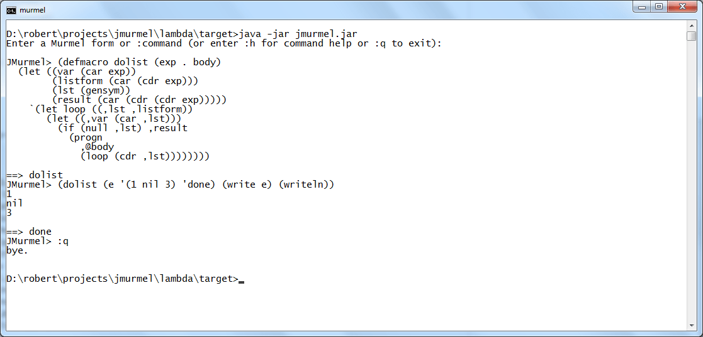
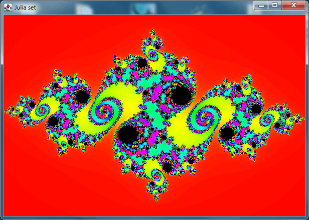
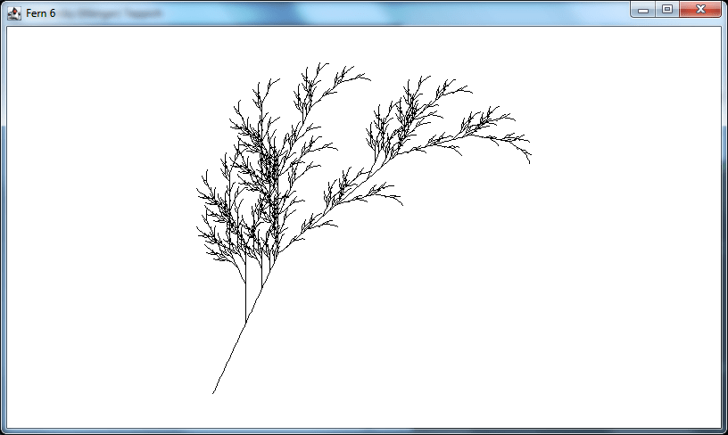
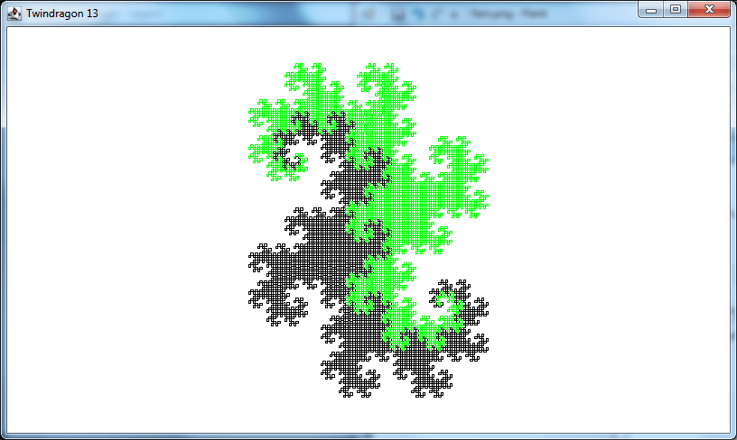

JMurmel
(->> your-code
(macroexpand)
(lisp-to-java)
(java-to-bytecode)
(run-on-jvm))
; ==> BRRRRR!!!
JMurmel is a lightweight JVM-based interpreter/ compiler for Murmel, a Lisp dialect inspired by a subset of Common Lisp.
Download
JMurmel 1.1
to try it out -
GETTING STARTED.txt has all the steps needed.
See
Murmel 1.1 Language reference
for info about the core language, and see
Murmel's default library documentation.
See the JMurmel Github Repo for source code, more information and sample code.
Some screenshots:
Text session defining and using a macro:

JMurmel as an inferior Lisp in Emacs (use C-M-x to eval Murmel-S-expressions):
JMurmel does bitmap graphics:

JMurmel does turtle graphics as well:


See JMurmel Github Repo for more...
Copyright © 2021-2022 by Robert Mayer.